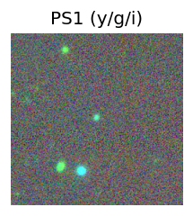
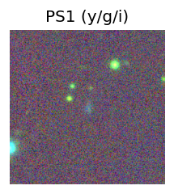
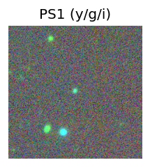
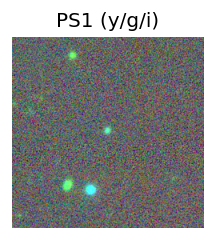
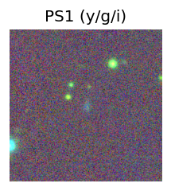
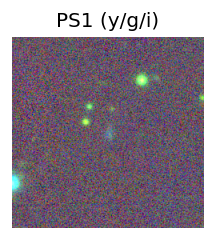

Candidate List 20250731 Previous Day Next Day Section 1: New Sources (age<1d) Cosmological Afterglow
Section 2: Old (1-5d) sources observed last night placeholder
Section 1: New Afterglow/FBOT Cands Last Night (2)
1. ZTF25abgacxi (Afterglow?) [Back to Top] [Share] [Trigger Swift] [Fritz ] [Lasair ]RA, Dec: 339.33771, 42.34283 22h37m21.05s, 42d20m34.20sGalactic (l, b): 98.05871, -13.96149 ext(g-r) = 0.257 Consistent with synchrotron, g-r>0!
2. ZTF25abgeett (Afterglow?) [Back to Top] [Share] [Trigger Swift] [Fritz ] [Lasair ]RA, Dec: 76.4015, 70.25403 5h 5m36.36s, 70d15m14.49sGalactic (l, b): 141.38773, 17.16984 ext(g-r) = 0.128PS1: 1 source in 3 arcsec Closest: d = 0.26 arcsec photoz=0.74+/-0.12 peak abs mag = -23.14
Section 2: Older Sources Observed Last Night (14)
0. ZTF25abdsrto (Afterglow?) [Back to Top] [Share] [Trigger Swift] [Fritz ] [Lasair ]RA, Dec: 290.75235, -8.43592 19h23m0.57s, -8d-26m-9.31sGalactic (l, b): 28.92551, -10.82363 ext(g-r) = 0.269PS1: 1 source in 3 arcsec Closest: d = 6.16 arcsec photoz=0.49+/-0.04 peak abs mag = -26.61
1. ZTF25abdzkae (FBOT?) [Back to Top] [Share] [Trigger Swift] [Fritz ] [Lasair ]RA, Dec: 266.82562, 29.26902 17h47m18.15s, 29d16m8.47sGalactic (l, b): 54.13579, 25.93633 ext(g-r) = 0.067LegacySurvey: 1 sources in 3 arcsec Closest: d = 1.26 arcsec, 289.8 deg (east of north) photoz=0.3 (68% bounds 0.2, 0.49), type=EXP peak abs mag = -21.98 (68% bounds -20.96, -23.23)
2. ZTF25abecvml (FBOT?) [Back to Top] [Share] [Trigger Swift] [Fritz ] [Lasair ]RA, Dec: 347.52788, 3.15332 23h10m6.69s, 3d 9m11.95sGalactic (l, b): 80.07792, -51.08804 ext(g-r) = 0.06 peak abs mag = -22.57 LegacySurvey: 1 sources in 3 arcsec Closest: d = 0.42 arcsec, 62.6 deg (east of north) photoz=0.09 (68% bounds 0.07, 0.11), type=REX peak abs mag = -20.06 (68% bounds -19.48, -20.5)
3. ZTF25abecxkt (Afterglow?) [Back to Top] [Share] [Trigger Swift] [Fritz ] [Lasair ]RA, Dec: 11.34059, 29.82799 0h45m21.74s, 29d49m40.78sGalactic (l, b): 121.36032, -33.02521 ext(g-r) = 0.058peak abs mag = -19.04 LegacySurvey: 1 sources in 3 arcsec Closest: d = 2.25 arcsec, 103.6 deg (east of north) photoz=0.03 (68% bounds 0.03, 0.04), type=SER peak abs mag = -18.41 (68% bounds -18.17, -18.6) Consistent with synchrotron, g-r>0!
4. ZTF25aberhsz (Afterglow?) [Back to Top] [Share] [Trigger Swift] [Fritz ] [Lasair ]RA, Dec: 266.76659, -13.33856 17h47m3.98s, -13d-20m-18.81sGalactic (l, b): 13.58194, 7.74983 ext(g-r) = 0.538
5. ZTF25abeuvaa (FBOT?) [Back to Top] [Share] [Trigger Swift] [Fritz ] [Lasair ]RA, Dec: 327.90779, -27.248 21h51m37.87s, -27d-14m-52.81sGalactic (l, b): 22.06467, -50.23943 ext(g-r) = 0.033 PS1: 1 source in 3 arcsec Closest: d = 1.16 arcsec photoz=0.34+/-0.29 peak abs mag = -22.38
6. ZTF25abewmjr (Afterglow?FBOT?) [Back to Top] [Share] [Trigger Swift] [Fritz ] [Lasair ]RA, Dec: 337.98148, 32.6787 22h31m55.56s, 32d40m43.32sGalactic (l, b): 91.75251, -21.61408 ext(g-r) = 0.091peak abs mag = -20.57 LegacySurvey: 1 sources in 3 arcsec Closest: d = 1.10 arcsec, 302.0 deg (east of north) photoz=0.1 (68% bounds 0.07, 0.16), type=EXP peak abs mag = -19.97 (68% bounds -19.16, -21.03) Consistent with synchrotron, g-r>0!
7. ZTF25abewrxj (Afterglow?) [Back to Top] [Share] [Trigger Swift] [Fritz ] [Lasair ]RA, Dec: 5.54352, 34.76596 0h22m10.45s, 34d45m57.47sGalactic (l, b): 116.14536, -27.71986 ext(g-r) = 0.06peak abs mag = -17.45 PS1: 1 source in 3 arcsec Closest: d = 4.49 arcsec photoz=0.06+/-0.01 peak abs mag = -18.13 Consistent with synchrotron, g-r>0!
8. ZTF25abeyogz (FBOT?) [Back to Top] [Share] [Trigger Swift] [Fritz ] [Lasair ]RA, Dec: 327.51972, -10.43359 21h50m4.73s, -10d-26m-0.91sGalactic (l, b): 45.35054, -44.25132 ext(g-r) = 0.042LegacySurvey: 1 sources in 3 arcsec Closest: d = 0.13 arcsec, 170.7 deg (east of north) photoz=0.23 (68% bounds 0.14, 0.34), type=REX peak abs mag = -20.31 (68% bounds -19.06, -21.26) Consistent with synchrotron, g-r>0!
9. ZTF25abffzis (Afterglow?) [Back to Top] [Share] [Trigger Swift] [Fritz ] [Lasair ]RA, Dec: 284.38692, -18.77419 18h57m32.86s, -18d-46m-27.10sGalactic (l, b): 16.7345, -9.74215 ext(g-r) = 0.237
10. ZTF25abfnnqx (FBOT?) [Back to Top] [Share] [Trigger Swift] [Fritz ] [Lasair ]RA, Dec: 184.78712, 28.24325 12h19m8.91s, 28d14m35.70sGalactic (l, b): 202.20289, 82.76688 ext(g-r) = 0.025LegacySurvey: 1 sources in 3 arcsec Closest: d = 1.72 arcsec, 93.6 deg (east of north) photoz=0.14 (68% bounds 0.09, 0.23), type=SER peak abs mag = -20.37 (68% bounds -19.32, -21.48)
11. ZTF25abfwfoj (Afterglow?) [Back to Top] [Share] [Trigger Swift] [Fritz ] [Lasair ]RA, Dec: 188.82295, -4.21722 12h35m17.51s, -4d-13m-2.00sGalactic (l, b): 295.22965, 58.41285 ext(g-r) = 0.051LegacySurvey: 1 sources in 3 arcsec Closest: d = 7.30 arcsec, 341.2 deg (east of north) photoz=0.62 (68% bounds 0.52, 0.67), type=REX peak abs mag = -27.62 (68% bounds -27.18, -27.84)
12. ZTF25abfwpil (FBOT?) [Back to Top] [Share] [Trigger Swift] [Fritz ] [Lasair ]RA, Dec: 253.98107, -19.22894 16h55m55.46s, -19d-13m-44.17sGalactic (l, b): 1.71571, 14.81311 ext(g-r) = 0.361PS1: 1 source in 3 arcsec Closest: d = 1.46 arcsec photoz=0.09+/-0.39 peak abs mag = -19.53
13. ZTF25abfzhif (Afterglow?) [Back to Top] [Share] [Trigger Swift] [Fritz ] [Lasair ]RA, Dec: 299.28881, -27.57188 19h57m9.31s, -27d-34m-18.75sGalactic (l, b): 13.63964, -25.73359 ext(g-r) = 0.129 Consistent with synchrotron, g-r>0! 


 



 
